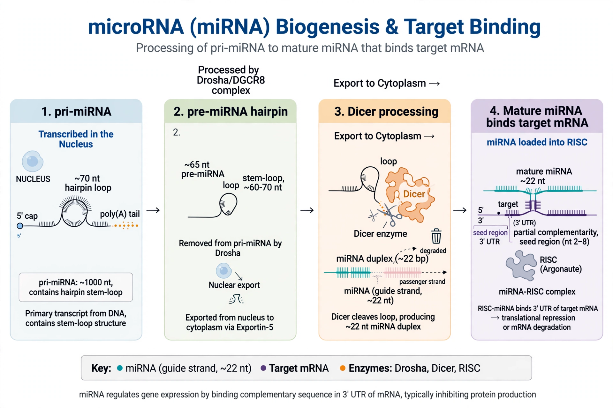

MicroRNAs (miRNAs) are small, single-stranded, non-coding RNA molecules, typically about 21–23 nucleotides long, that regulate gene expression post-transcriptionally. They are found in plants, animals and some viruses, and are encoded in DNA as longer primary transcripts.

The first microRNA, lin-4, was discovered in 1993 by Victor Ambros and colleagues in the nematode Caenorhabditis elegans, where it regulates developmental timing. A second, let-7, followed in 2000 and proved to be conserved across animals. Ambros and Gary Ruvkun shared the 2024 Nobel Prize in Physiology or Medicine for the discovery of microRNA and its role in post-transcriptional gene regulation.
Genes are transcribed by RNA polymerase II into primary miRNAs (pri-miRNAs) with hairpin structures. In the nucleus the Drosha–DGCR8 microprocessor cleaves them into precursor miRNAs (pre-miRNAs, ~70 nt). Exportin-5 carries pre-miRNAs to the cytoplasm, where Dicer cuts them into short duplexes. One strand is loaded into an Argonaute protein to form the RNA-induced silencing complex (RISC).
RISC uses the miRNA, especially its seed sequence (nucleotides 2–8), to bind complementary sites — usually in the 3′ untranslated region of messenger RNAs. Binding leads to translational repression, deadenylation and decay of the target, or, with near-perfect complementarity in plants, direct cleavage. A single miRNA can regulate hundreds of targets, and it is estimated that miRNAs influence more than half of human protein-coding genes.
MicroRNAs regulate development, cell differentiation, proliferation, apoptosis and metabolism. Their dysregulation is implicated in cancer (where they can act as oncogenes, “oncomiRs”, or tumour suppressors), cardiovascular and neurological disorders, and immune dysfunction. Circulating miRNAs in blood are investigated as biomarkers, and miRNA-based therapies are in clinical development.
Recreated from memory.